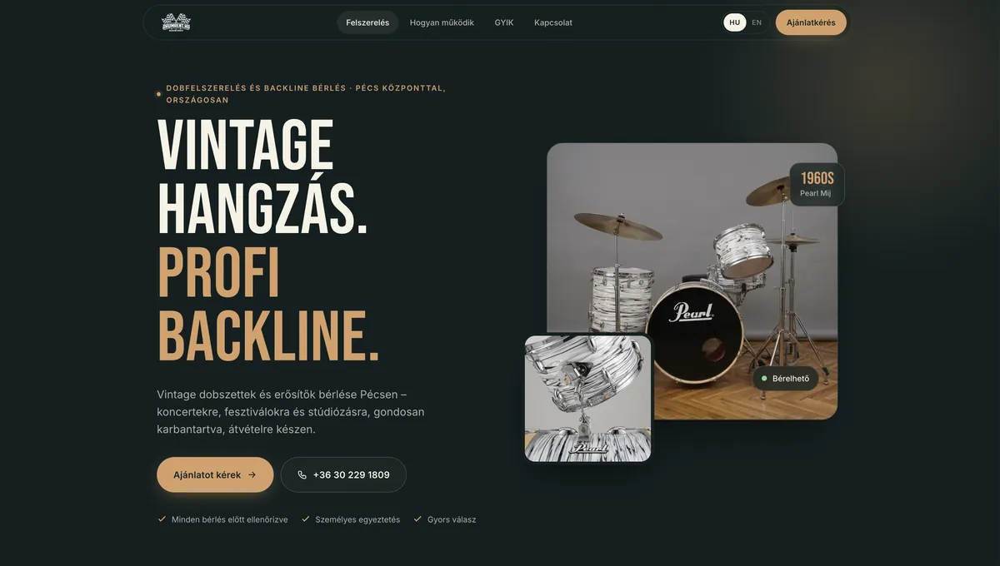

Weboldal és webshop
Gyors, mobilbarát, keresőoptimalizált oldalak, amelyeket te magad is könnyen frissíthetsz.
190 000 Ft-tól
UX/UI design · Webfejlesztés · Applikációk
Megtervezem és meg is építem a weboldalad, webshopod vagy applikációd. Gyors, akadálymentes, és a látogatóid azonnal megértik, mit kínálsz.
Magánszemélyeknek és kis- és középvállalkozásoknak, négy területen. Mindegyikben az a cél, hogy a látogatóid gyorsan megtalálják, amit keresnek.
Gyors, mobilbarát, keresőoptimalizált oldalak, amelyeket te magad is könnyen frissíthetsz.
190 000 Ft-tól
Kutatás, tervezés és kattintható prototípus, hogy az app azt tudja, amire a felhasználóknak szükségük van.
200 000 Ft-tól
Audit és javítás a WCAG 2.2 és az európai akadálymentességi irányelv (EAA) szerint.
150 000 Ft-tól
Chatbot, automatizálás, okos keresés. Átláthatóan, úgy, hogy az irányítás nálad marad.
300 000 Ft-tól

Weboldal · Design és fejlesztés
Kétnyelvű weboldal ajánlatkéréssel egy pécsi bérlőcégnek, a tervezéstől a fejlesztésig.
„Miklóssal már évtizedes kapcsolatot tudhatunk magunk mögött. Több projektünknek és vállalkozásunknak épített professzionális weboldalt rugalmasan és rövid határidővel. A support tekintetében is rendkívül gyors és jó problémamegoldó. Csak ajánlani tudom!”
Évekig fejlesztőként dolgoztam, mielőtt designer lettem. Amit megtervezek, azt meg is tudom építeni, így semmi sem vész el a terv és a kész oldal között.
Minden oldalam WCAG 2.2 AA szinten készül. A jó kontraszt, az olvasható szöveg és a tiszta szerkezet minden látogatónak segít, és a Google is értékeli.
Ott használok mesterséges intelligenciát, ahol valóban gyorsít, és mindig átláthatóan. A döntés és a minőség felelőssége nálam marad.
Négy lépés az első beszélgetéstől az átadásig.
Online vagy személyesen beszélgetünk a céljaidról.
30 percÍrásos ajánlatot kapsz fix árral és határidővel, utána elkészül az oldaltérkép és a drótváz.
2–5 munkanapElkészül a design, majd a működő oldal. Közben bármikor megnézheted és véleményezheted.
1–6 hétMegmutatom, hogyan frissítsd a tartalmat. Kérésre karbantartást és továbbfejlesztést is vállalok.
folyamatosEgy egyoldalas landing maximum 1 hét, egy bemutatkozó oldal maximum 3 hét, egy céges oldal vagy webshop 3–6 hét. A pontos ütemtervet az ajánlatban rögzítjük.
Ha webshopot üzemeltetsz vagy bizonyos online szolgáltatásokat nyújtasz, akkor az európai akadálymentességi irányelv alapján 2025. június 28. óta valószínűleg igen. A mikrovállalkozásokra kivételek vonatkozhatnak. Egy gyorsauditban felmérem, hol tart az oldalad; a jogi kérdésekről érdemes jogásszal is egyeztetni.
Igen. Olyan tartalomkezelőt választunk, ami illik hozzád, és átadáskor megmutatom, hogyan módosíthatod a szövegeket és a képeket.
Az első konzultáció ingyenes és kötelezettségmentes. 1 munkanapon belül válaszolok.